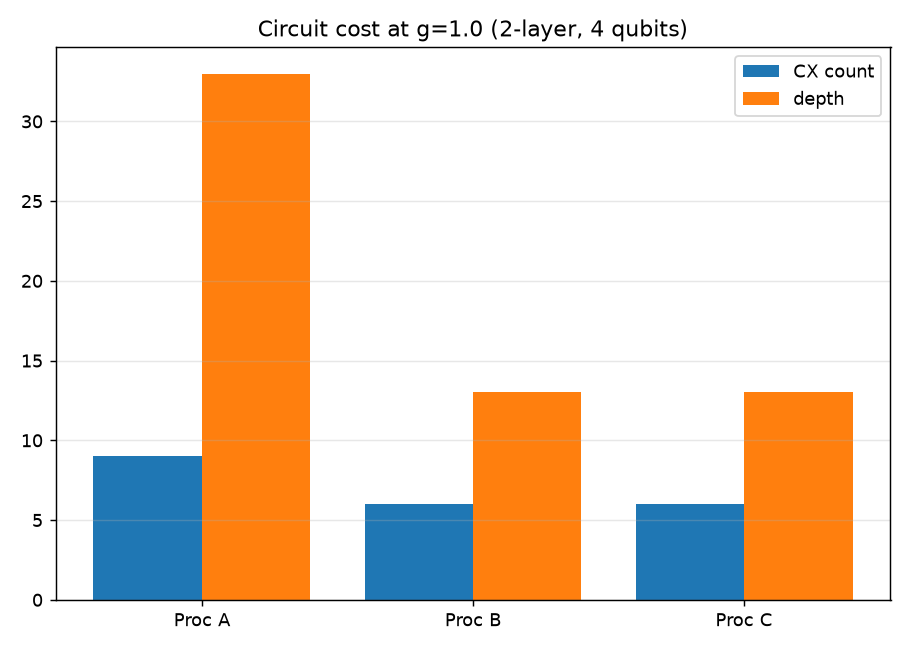
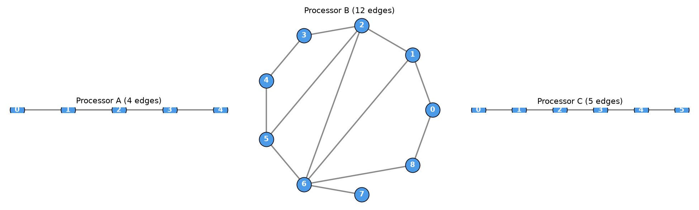
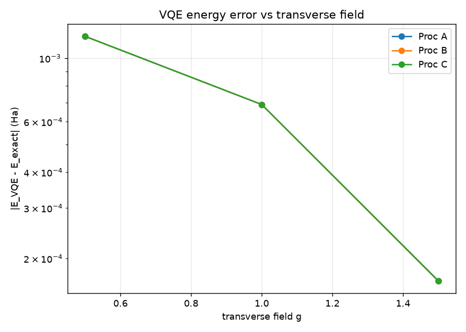
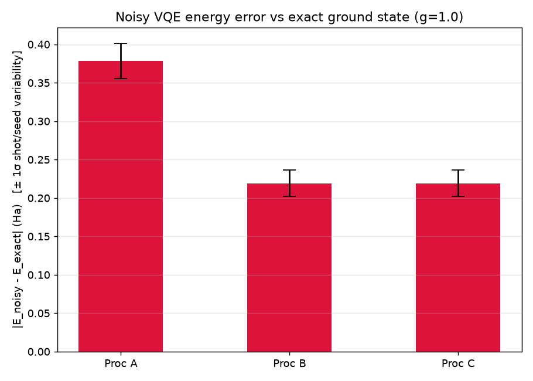

We run the same VQE algorithm for the 4-site Transverse-Field Ising Model across two fixed chip topologies and a proposed Processor C — proving that routing, not physics, is the real bottleneck for near-term variational quantum simulation.
A nearest-neighbour coupling Z_i Z_{i+1} needs a CNOT between
connected qubits. When the chip lacks that edge, the compiler inserts SWAPs — each costing
3 extra CNOTs — deepening the circuit and multiplying noise.
Coupling (1,3) is a chord that skips qubit 2. Routing the chain
0-1-2-3 double-backs through the hub, forcing a SWAP and a ~3× depth blow-up.
A heavy-hex lattice containing a clean 6-cycle 0-1-2-3-4-5-6. The identical
chain maps with zero SWAPs at native cost.
A 6-qubit open path matching B's best cost with half the qubits, plus a spare qubit for ancilla error mitigation. The co-design payoff.
Every number below is generated by src/experiment.py — reproducible,
no hand-typed figures.
| Processor | CX count | Depth | SWAPs | VQE energy error | Ground-state fidelity |
|---|---|---|---|---|---|
| A 5q · chorded | 9 | 36 | 1 | 3.21e-01 Ha | 0.794 |
| B 9q · heavy-hex | 6 | 13 | 0 | 3.21e-01 Ha | 0.794 |
| C 6q · proposed | 6 | 13 | 0 | 3.21e-01 Ha | 0.794 |




Exact diagonalisation gives the ground-truth to beat. VQE runs 4 random restarts with
COBYLA. Cost is measured by transpiling onto each real coupling map with
optimization_level=3. Noise uses a fair native-circuit comparison at 20k shots.
Accuracy columns are identical across processors by construction — we don't claim a physics win that routing can't create. The signal is purely architectural: A pays 50% more CX and 2.8× depth for the exact same answer.
All figures regenerate in ~45 seconds:
pip install -r requirements.txt
cd src && python experiment.py
Or run the notebook end-to-end: jupyter nbconvert --to notebook --execute main.ipynb